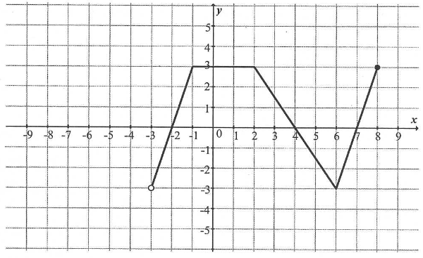
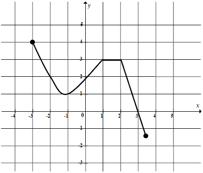
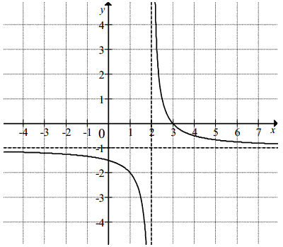

Matura podstawowa z matematyki - kurs - funkcje
Dziedziną funkcji \( f \) jest przedział 
A.\(\langle 0,3 \rangle \)
B.\((0, 8 \rangle \)
C.\(\langle -3,3 \rangle \)
D.\((-3, 8 \rangle \)
D
Na rysunku przedstawiony jest wykres funkcji \(f(x)\) określonej dla \(x\in [-7,
8]\).  Odczytaj z wykresu i
zapisz:
Odczytaj z wykresu i
zapisz:
a) największą wartość funkcji \(f\),
b) zbiór rozwiązań nierówności \(f(x)\lt 0\).
Odczytaj z wykresu i
zapisz:a) największą wartość funkcji \(f\),
b) zbiór rozwiązań nierówności \(f(x)\lt 0\).
a) \(7\); b) \(x\in (-3;5)\)
Zbiorem wartości funkcji przedstawionej na rysunku jest przedział 
A.\(\langle -3,6 \rangle\)
B.\(\langle -1,4 \rangle\)
C.\((1,3)\)
D.\((-2,2)\)
B
Zbiorem wartości funkcji, której wykres przedstawiono na rysunku jest
przedział:

A.\( \langle -4,5 \rangle \)
B.\( \langle -3,4 \rangle \)
C.\( \langle -2,4 \rangle \)
D.\( \langle -3,2 \rangle \)
B
Na rysunku przedstawiony jest wykres funkcji \(y = f(x)\).  Zbiorem wartości tej funkcji jest
Zbiorem wartości tej funkcji jest
Zbiorem wartości tej funkcji jest
A.\( \langle -4,3 \rangle \)
B.\( \langle -4,-1 \rangle \cup \langle 1,3 \rangle\)
C.\( \langle -4,-1 \rangle \cup ( 1,3 \rangle \)
D.\( \langle -5,6 \rangle \)
C
Na rysunku przedstawiono wykres funkcji \(y=f(x)\).  Największa wartość funkcji \(f\) w
przedziale \([-1,1]\) jest równa
A.\( 4 \)
B.\( 3 \)
C.\( 2 \)
D.\( 1 \)
B
Rysunek przedstawia wykres pewnej funkcji \( y=f(x) \), określonej dla \( x \in
\langle -4,4 \rangle \).  Zbiór
wszystkich argumentów, dla których funkcja \( f \) przyjmuje wartości niedodatnie, to zbiór
Zbiór
wszystkich argumentów, dla których funkcja \( f \) przyjmuje wartości niedodatnie, to zbiór
Zbiór
wszystkich argumentów, dla których funkcja \( f \) przyjmuje wartości niedodatnie, to zbiór A.\(\langle 0,3 )\cup ( 3,4 \rangle \)
B.\(\langle -4,-3 \rangle\cup \langle 0,4 \rangle \)
C.\((-4,-3)\cup (0,3)\cup (3,4) \)
D.\((-2,1)\cup (3,4) \)
B
Do wykresu funkcji \( f(x)=\frac{a}{x+1} \) określonej dla \(x\ne -1\) należy punkt
\( A=(-2,3) \) dla \( a \) równego:
A.\(-3 \)
B.\(3 \)
C.\(-8 \)
D.\(8 \)
A
Na rysunku przedstawiony jest wykres funkcji \(y=f(x)\).  Które równanie ma dokładnie trzy
rozwiązania?
Które równanie ma dokładnie trzy
rozwiązania?
Które równanie ma dokładnie trzy
rozwiązania? A.\( f(x)=0 \)
B.\( f(x)=1 \)
C.\( f(x)=2 \)
D.\( f(x)=3 \)
C
Naszkicuj wykres funkcji \[f(x)=\begin{cases} 2x+1\quad \text{dla }x\le 0\\
x+2\quad \text{dla }x>0 \end{cases} \]
Największą wartością funkcji \( f \) jest
A.\(3 \)
B.\(0 \)
C.\(-3 \)
D.\(8 \)
A
Miejscem zerowym funkcji kwadratowej \(y=-(-x-7)(1+x)\)
jest
A.\( x=7 \)
B.\( x=1 \)
C.\( x=0 \)
D.\( x=-1 \)
D
Dany jest wykres funkcji  Ile miejsc zerowych ma ta funkcja w przedziale \(\langle -\pi , 1 \rangle\)?
Ile miejsc zerowych ma ta funkcja w przedziale \(\langle -\pi , 1 \rangle\)?
Ile miejsc zerowych ma ta funkcja w przedziale \(\langle -\pi , 1 \rangle\)? A.\( 0 \)
B.\( 1 \)
C.\( 2 \)
D.\( 3 \)
B
Miejscami zerowymi funkcji kwadratowej \( y = -3(x-7)(x+2)
\) są
A.\(x=7, x=-2 \)
B.\(x=-7, x=-2 \)
C.\(x=7, x=2 \)
D.\(x=-7, x=2 \)
A
Wskaż wykres funkcji, która w przedziale \( \langle -4, 4 \rangle \) ma dokładnie
jedno miejsce zerowe. 
C
Funkcja \(f\) jest określona wzorem \( f(x)=\begin{cases} {x-4\ \ \ \quad \text{
dla } x\le 3}\\ {-x+2\quad \text{ dla }x>3} \end{cases} \). Ile miejsc zerowych ma ta funkcja?
A.\( 0 \)
B.\( 1 \)
C.\( 2 \)
D.\( 3 \)
A
Funkcja \( f \) jest określona wzorem \( f(x)=\begin{cases} -3x+4 &\text{dla }x\lt
1\\ 2x-1 &\text{dla }x\ge 1 \end{cases} \). Ile miejsc zerowych ma ta funkcja?
A.\(0 \)
B.\(1 \)
C.\(2 \)
D.\(3 \)
A
Oblicz miejsca zerowe funkcji \[f(x)=\begin{cases} 2x+1\quad \text{dla }x\le 0\\
x+2\quad \text{dla }x>0 \end{cases} \]
\(x=-\frac{1}{2}\)
Miejscem zerowym funkcji \(f\) określonej wzorem \(f(x)=\begin{cases} x^2-1\quad
\text{ dla } x\in (-\infty ,-4 \rangle\\ 5x+10\quad \text{ dla } x\in (-4 ,2)\\ x+4\quad \text{ dla
} x\in \langle 2,+\infty ) \end{cases} \) jest:
A.\( -4 \)
B.\( -2 \)
C.\( -1 \)
D.\( 1 \)
B
Liczba \((−2)\) jest miejscem zerowym funkcji liniowej \(f(x)=mx+2\). Wtedy
A.\( m=3 \)
B.\( m=1 \)
C.\( m=-2 \)
D.\( m=-4 \)
B
Liczba \( 1 \) jest miejscem zerowym funkcji liniowej \(
f(x)=(2-m)x+1 \). Wynika stąd, że
A.\(m=0 \)
B.\(m=1 \)
C.\(m=2 \)
D.\(m=3 \)
D
Miejscem zerowym funkcji liniowej \(f(x)=-2x+m+7\) jest
liczba \(3\). Wynika stąd, że
A.\( m=7 \)
B.\( m=1 \)
C.\( m=-1 \)
D.\( m=-7 \)
C
Dana jest funkcja \(f(x) = (1 + m^2)x - 5\). Oblicz współczynnik \(m\) jeżeli
wiadomo, że \(x = 1\) jest miejscem zerowym funkcji \(f(x)\).
\(m=-2\) lub \(m=2\)
Miejscami zerowymi funkcji \( f(x)=\frac{(x-2)(x^2-6x+9)}{x^2-9} \) są liczby:
A.\(2 \)
B.\(2;3 \)
C.\(-2;3 \)
D.\(-3;2;3 \)
A
Dana jest funkcja \(f(x)=\frac{x^2+2}{1-b}\). Oblicz współczynnik \(b\) jeżeli
wiadomo, że \(f(2) = -3\).
\(b=3\)
Funkcja \(f\) jest określona wzorem \(f(x)=\frac{2x-b}{x-9}\) dla \(x \ne 9\).
Ponadto wiemy, że \(f(4)=-1\). Oblicz współczynnik \(b\).
\(b=3\)
Funkcja liniowa \(f(x)=(m+2)x+2m\) jest rosnąca, gdy
A.\( m<-2 \)
B.\( m\lt 2 \)
C.\( m>-2 \)
D.\( m>-4 \)
C
Punkt \(P=(a+1,2)\) należy do wykresu funkcji \(f(x)=\frac{4}{x}\). Liczba
\(a\) jest równa
A.\( 0 \)
B.\( -1 \)
C.\( 2 \)
D.\( 1 \)
D
Funkcja \(f\) jest określona wzorem \(f(x)=\frac{2x}{x-1}\) dla \(x\ne 1\). Wartość funkcji \(f\) dla
argumentu \(x=2\) jest równa
A.\( 2 \)
B.\( -4 \)
C.\( 4 \)
D.\( -2 \)
C
Dana jest funkcja \(h(x)=\left ( -\frac{1}{3}m+2
\right)x+\frac{3}{2}m-1\). Funkcja ta dla argumentu \(0\) przyjmuje wartość \(5\).
Wówczas:
A.\( m=9 \)
B.\( m=6 \)
C.\( m=4 \)
D.\( m=2 \)
C
Na rysunku przedstawiono fragment wykresu funkcji \( f \), który powstał w
wyniku przesunięcia wykresu funkcji określonej wzorem \( y=\frac{1}{x} \) dla każdej liczby
rzeczywistej \( x\ne 0 \). 
a) Odczytaj z wykresu i zapisz zbiór tych wszystkich argumentów,
dla których wartości funkcji \( f \) są większe od \( 0 \).
b) Podaj miejsce zerowe funkcji \( g \) określonej wzorem \( g(x)=f(x-3) \).
b) Podaj miejsce zerowe funkcji \( g \) określonej wzorem \( g(x)=f(x-3) \).
a) \(x\in (2;3)\)
b) \(x=6\)
Funkcja \(W\) jest określona wzorem \(W(x)=3x^4-bx-2a\) dla wszystkich liczb
rzeczywistych. Równość \(W(-1)+W(1)=0\) zachodzi, gdy
A.\( a=\frac{2}{3} \)
B.\( a=\frac{3}{2} \)
C.\( a=1 \)
D.\( a=-1 \)
B
Na rysunku 1. jest przedstawiony wykres funkcji \(f\), a na rysunku 2. - wykres
funkcji \(g\).  Funkcja \(g\)
jest określona wzorem
Funkcja \(g\)
jest określona wzorem
Funkcja \(g\)
jest określona wzorem A.\( g(x)=-f(x) \)
B.\( g(x)=f(-x) \)
C.\( g(x)=f(x)+4 \)
D.\( g(x)=f(x)-4 \)
A